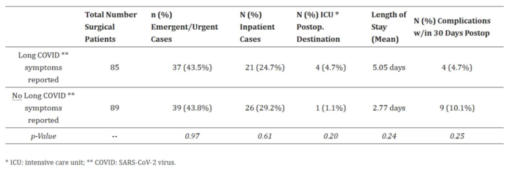

# 安装包
if (!requireNamespace("gt", quietly = TRUE)) {
install.packages("gt", type = "binary")
}
if (!requireNamespace("gtExtras", quietly = TRUE)) {
install.packages("gtExtras")
}
if (!requireNamespace("readr", quietly = TRUE)) {
install.packages("dplyr")
}
# 加载包
library(gt)
library(gtExtras) # 用于绘制高亮行/列
library(dplyr)表格
表格既是一种可视化交流模式，又是一种组织整理数据的手段。
示例

以上图表是一个基本表格，包含标题行和6行数据。
环境配置
系统要求： 跨平台（Linux/MacOS/Windows）
编程语言：R
依赖包：
gt,gtExtras,dplyr
数据准备
选取iris数据集前7行和UCSC Xena数据库的胃癌临床数据前7行。
# 1.选取iris数据集前7行
data <- iris[1:7,]
head(data) Sepal.Length Sepal.Width Petal.Length Petal.Width Species
1 5.1 3.5 1.4 0.2 setosa
2 4.9 3.0 1.4 0.2 setosa
3 4.7 3.2 1.3 0.2 setosa
4 4.6 3.1 1.5 0.2 setosa
5 5.0 3.6 1.4 0.2 setosa
6 5.4 3.9 1.7 0.4 setosa# 2.UCSC Xena数据库胃癌临床数据前7行（仅在绘制三线表的时候使用了该临床数据）
data_clinical <- read.table("https://bizard-1301043367.cos.ap-guangzhou.myqcloud.com/TCGA-STAD.survival.tsv", header = TRUE, sep = "\t")
data_clinical <- data_clinical[1:7,]
head(data_clinical) sample OS.time OS X_PATIENT
1 TCGA-CG-4306-01A 1 1 TCGA-CG-4306
2 TCGA-HU-A4GQ-01A 3 1 TCGA-HU-A4GQ
3 TCGA-FP-A8CX-01A 7 0 TCGA-FP-A8CX
4 TCGA-HU-A4GY-01A 8 0 TCGA-HU-A4GY
5 TCGA-HU-A4GY-11A 8 0 TCGA-HU-A4GY
6 TCGA-BR-8363-01A 8 1 TCGA-BR-8363可视化
1. 基本绘图
# 调用gt()函数即可绘图
gt(data)| Sepal.Length | Sepal.Width | Petal.Length | Petal.Width | Species |
|---|---|---|---|---|
| 5.1 | 3.5 | 1.4 | 0.2 | setosa |
| 4.9 | 3.0 | 1.4 | 0.2 | setosa |
| 4.7 | 3.2 | 1.3 | 0.2 | setosa |
| 4.6 | 3.1 | 1.5 | 0.2 | setosa |
| 5.0 | 3.6 | 1.4 | 0.2 | setosa |
| 5.4 | 3.9 | 1.7 | 0.4 | setosa |
| 4.6 | 3.4 | 1.4 | 0.3 | setosa |
这个表直接调用gt()函数就可绘制。
2. 数据居中
# auto_align = FALSE即取消自动对齐就是居中
gt(data,auto_align = FALSE)| Sepal.Length | Sepal.Width | Petal.Length | Petal.Width | Species |
|---|---|---|---|---|
| 5.1 | 3.5 | 1.4 | 0.2 | setosa |
| 4.9 | 3.0 | 1.4 | 0.2 | setosa |
| 4.7 | 3.2 | 1.3 | 0.2 | setosa |
| 4.6 | 3.1 | 1.5 | 0.2 | setosa |
| 5.0 | 3.6 | 1.4 | 0.2 | setosa |
| 5.4 | 3.9 | 1.7 | 0.4 | setosa |
| 4.6 | 3.4 | 1.4 | 0.3 | setosa |
表中的数据处于居中的布局。
3. 添加标题
# tab_heade()添加主标题和副标题
gt(data) %>% # "%>%"是管道操作符，可以完成一系列管道化操作
tab_header(title = md("**Iris** DataSet"), # 添加标题,md是以markdown格式显示文本
# 添加副标题
subtitle = md("The species includes *Iris setosa, versicolor, and virginica*"))| Iris DataSet | ||||
| The species includes Iris setosa, versicolor, and virginica | ||||
| Sepal.Length | Sepal.Width | Petal.Length | Petal.Width | Species |
|---|---|---|---|---|
| 5.1 | 3.5 | 1.4 | 0.2 | setosa |
| 4.9 | 3.0 | 1.4 | 0.2 | setosa |
| 4.7 | 3.2 | 1.3 | 0.2 | setosa |
| 4.6 | 3.1 | 1.5 | 0.2 | setosa |
| 5.0 | 3.6 | 1.4 | 0.2 | setosa |
| 5.4 | 3.9 | 1.7 | 0.4 | setosa |
| 4.6 | 3.4 | 1.4 | 0.3 | setosa |
表中按照markdown格式添加了标题和副标题。
4. 添加脚注
# 使用tab_footnote()添标题的脚注
gt(data) %>%
tab_header(title = md("**Iris** DataSet"),
subtitle = md("The species includes *Iris setosa
, versicolor, and virginica*")) %>%
tab_footnote(footnote = "Source: R help files",
locations = cells_title(groups="title"))| Iris DataSet1 | ||||
| The species includes Iris setosa , versicolor, and virginica | ||||
| Sepal.Length | Sepal.Width | Petal.Length | Petal.Width | Species |
|---|---|---|---|---|
| 5.1 | 3.5 | 1.4 | 0.2 | setosa |
| 4.9 | 3.0 | 1.4 | 0.2 | setosa |
| 4.7 | 3.2 | 1.3 | 0.2 | setosa |
| 4.6 | 3.1 | 1.5 | 0.2 | setosa |
| 5.0 | 3.6 | 1.4 | 0.2 | setosa |
| 5.4 | 3.9 | 1.7 | 0.4 | setosa |
| 4.6 | 3.4 | 1.4 | 0.3 | setosa |
| 1 Source: R help files | ||||
这个表添加了标题Iris数据集的脚注。
5. 添加合并单元格标签
# tab_spanner()添加合并单元格标签
gt(data) %>%
tab_header(title = md("**Iris** DataSet"),
subtitle = md("The species includes *Iris setosa
, versicolor, and virginica*")) %>%
tab_footnote(footnote = "Source: R help files",
locations = cells_title(groups="title")) %>%
tab_spanner(
label = "Sepal",columns = c(Sepal.Length, Sepal.Width)) %>%
tab_spanner(
label = "Petal",columns = c(Petal.Length, Petal.Width))| Iris DataSet1 | ||||
| The species includes Iris setosa , versicolor, and virginica | ||||
Sepal
|
Petal
|
Species | ||
|---|---|---|---|---|
| Sepal.Length | Sepal.Width | Petal.Length | Petal.Width | |
| 5.1 | 3.5 | 1.4 | 0.2 | setosa |
| 4.9 | 3.0 | 1.4 | 0.2 | setosa |
| 4.7 | 3.2 | 1.3 | 0.2 | setosa |
| 4.6 | 3.1 | 1.5 | 0.2 | setosa |
| 5.0 | 3.6 | 1.4 | 0.2 | setosa |
| 5.4 | 3.9 | 1.7 | 0.4 | setosa |
| 4.6 | 3.4 | 1.4 | 0.3 | setosa |
| 1 Source: R help files | ||||
这个表使用了tab_spanner()添加”Sepal”，“Petal”合并单元格标签。
6. 添加高亮列/高亮行
# 添加高亮列\高亮行
gt(data,auto_align = FALSE) %>%
gt_highlight_cols(Petal.Length,fill = "blue",
alpha = 0.5) %>%
gt_highlight_rows(rows = c(1,3)) | Sepal.Length | Sepal.Width | Petal.Length | Petal.Width | Species |
|---|---|---|---|---|
| 5.1 | 3.5 | 1.4 | 0.2 | setosa |
| 4.9 | 3.0 | 1.4 | 0.2 | setosa |
| 4.7 | 3.2 | 1.3 | 0.2 | setosa |
| 4.6 | 3.1 | 1.5 | 0.2 | setosa |
| 5.0 | 3.6 | 1.4 | 0.2 | setosa |
| 5.4 | 3.9 | 1.7 | 0.4 | setosa |
| 4.6 | 3.4 | 1.4 | 0.3 | setosa |
这个表设置了高亮列Petal.Length，和高亮行1、3行。
7. md()和html()添加文本
# md()和html()添加文本
gt(data) %>%
# title使用md()加粗，以及添加超链接。subtitle使用html()加下划线，斜体和颜色。
tab_header(title = md("[**Iris** DataSet](https://r-graph-gallery.com/)"),
subtitle = html("<u style='color:red;'>The species includes Iris
<i>setosa, versicolor, and virginica
</i></u>")) | Iris DataSet | ||||
| The species includes Iris setosa, versicolor, and virginica | ||||
| Sepal.Length | Sepal.Width | Petal.Length | Petal.Width | Species |
|---|---|---|---|---|
| 5.1 | 3.5 | 1.4 | 0.2 | setosa |
| 4.9 | 3.0 | 1.4 | 0.2 | setosa |
| 4.7 | 3.2 | 1.3 | 0.2 | setosa |
| 4.6 | 3.1 | 1.5 | 0.2 | setosa |
| 5.0 | 3.6 | 1.4 | 0.2 | setosa |
| 5.4 | 3.9 | 1.7 | 0.4 | setosa |
| 4.6 | 3.4 | 1.4 | 0.3 | setosa |
md()和html()添加文本
这个表通过md()和html()添加文本，修改文本样式。可以了解markdown格式和html格式的基本语法对添加的文本格式进行更改。
8. 更改表格样式
tab_style()有着丰富的表格样式内容，包含表格颜色填充，表格内容颜色、对齐方式、大小等，边框样式的更改。参数style设置样式，locations设置样式生效的位置。
三线表
# cell_borders()表示单元格边框，cells_body()是表格主体的位置
gt(data_clinical,auto_align = FALSE) %>%
tab_style(
style=cell_borders(sides = "bottom",
style="hidden"), # 样式设置为隐藏
locations=cells_body(rows=c(1,2,3,4,5,6)) # 定位到主体行除最后一行的底部
)| sample | OS.time | OS | X_PATIENT |
|---|---|---|---|
| TCGA-BR-A4J9-01A | 14 | 0 | TCGA-BR-A4J9 |
这个表类似于常用的三线表的图表格式，表格内容是胃癌的临床数据。
提示
关键参数: style / locations
style：设置单元格的样式，可选项有cell_fill()：单元格填充，cell_text()：单元格文本，cell_borders()：单元格边框。可用list()包含多项样式内容。locations：将style样式应用到的位置，可选项有cells_title()：表格标题，cells_body()：表格主体，cells_footnotes()：表格脚注， cells_column_labels()：表格列名等。可用list()表示多项位置。 cells_body()的参数有rows和columns，用于指定行和列。cells_column_labels()的参数有columns，用于指定列。
全边框表格
# 全边框表格
gt(data,auto_align = FALSE) %>%
tab_style(
style=cell_borders(sides = c("top", "bottom","left","right"),
weight = px(2)), # 上下左右边框都设置出来
locations=list(cells_body(),cells_column_labels()) # 多类型或者多位置可以用list，cells_column_labels()是指列名。
)| Sepal.Length | Sepal.Width | Petal.Length | Petal.Width | Species |
|---|---|---|---|---|
| 5.1 | 3.5 | 1.4 | 0.2 | setosa |
| 4.9 | 3.0 | 1.4 | 0.2 | setosa |
| 4.7 | 3.2 | 1.3 | 0.2 | setosa |
| 4.6 | 3.1 | 1.5 | 0.2 | setosa |
| 5.0 | 3.6 | 1.4 | 0.2 | setosa |
| 5.4 | 3.9 | 1.7 | 0.4 | setosa |
| 4.6 | 3.4 | 1.4 | 0.3 | setosa |
这个表的边框全部显示了出来，除了三线格和全边框表格，只要用tab_style()可以任意改变单元框的有无，颜色，粗细，样式。
9. 更改文本样式
# 更改文本样式
gt(data) %>%
tab_style(
style=cell_text(color="blue",font="bold",size="large",align="center",
v_align="middle",style="italic",weight="normal",
decorate="underline"),
locations=cells_body(rows=2,columns=Sepal.Length)
)| Sepal.Length | Sepal.Width | Petal.Length | Petal.Width | Species |
|---|---|---|---|---|
| 5.1 | 3.5 | 1.4 | 0.2 | setosa |
| 4.9 | 3.0 | 1.4 | 0.2 | setosa |
| 4.7 | 3.2 | 1.3 | 0.2 | setosa |
| 4.6 | 3.1 | 1.5 | 0.2 | setosa |
| 5.0 | 3.6 | 1.4 | 0.2 | setosa |
| 5.4 | 3.9 | 1.7 | 0.4 | setosa |
| 4.6 | 3.4 | 1.4 | 0.3 | setosa |
这个表更改了第二行第一列的文本样式。
提示
关键参数: size/align/v_align/style/weight/decorate
size：文本大小，可选项有”xx-small”,“x-small”,“small”,“medium”,“large”,“x-large”,“xx-large”，或者px()自定义值。align：水平对齐方式，可选项有”center”,“left”,“right”,“justify”(每行对齐)。v_align：垂直对齐方式，可选项有”top”,“bottom”,“middle”。style：文本样式，可选项有 “normal”,“italic”(斜体),“oblique”(也是斜体)。weight：文本的粗细，可选项有”normal”,“bold”(粗),“lighter”(更细),“bolder”(更粗)，或者1-1000的数字。decorate：添加线段，可选项有”overline”(线在文本上),“line-through”(线从文本穿过),“underline”(线在文本下)。
10. 更改填充样式
# 更改填充样式
gt(data) %>%
tab_style(
style=cell_fill(color = "yellow", alpha =0.5), #就两个参数，颜色和透明度
locations=cells_body(rows=2,columns=Sepal.Length)
)| Sepal.Length | Sepal.Width | Petal.Length | Petal.Width | Species |
|---|---|---|---|---|
| 5.1 | 3.5 | 1.4 | 0.2 | setosa |
| 4.9 | 3.0 | 1.4 | 0.2 | setosa |
| 4.7 | 3.2 | 1.3 | 0.2 | setosa |
| 4.6 | 3.1 | 1.5 | 0.2 | setosa |
| 5.0 | 3.6 | 1.4 | 0.2 | setosa |
| 5.4 | 3.9 | 1.7 | 0.4 | setosa |
| 4.6 | 3.4 | 1.4 | 0.3 | setosa |
这个表增加了第二行第一列的填充样式。
应用场景

以上图表是Bahir Dar市综合性专科公立医院收治的RTA成年患者生存状况及其预测因素的样本量统计。 [1]

以上图表显示了，2021年6月1日至2022年2月30日，亚的斯亚贝巴泽曼初级医院门诊和自愿咨询检测诊所（n=240）疟疾患者和健康对照组的基本凝血情况比较。[2]

以上图表是对长期新冠肺炎症状患者和无长期新冠病毒症状患者的手术特征和结果的比较。[3]
参考文献
[1] KEBEDE A G, TEGENAW A, TAMIR Y, et al. Survival status and its predictors among adult victims of road traffic accident admitted to public hospitals of Bahir Bar City, Amhara regional state, Northwest, Ethiopia, 2023: multi center retrospective follow-up study[J]. BMC Emerg Med, 2024,24(1): 177.
[2] TIRUNEH T, ALMAW A, ABEBAW A, et al. Basic coagulation parameters and platelet count among malaria patients attending at Addis Zemen Primary Hospital, Northwest Ethiopia[J]. BMC Infect Dis, 2024,24(1): 1069.
[3] GOLDHABER N H, RAMESH K, HORTON L E, et al. The Long Haul to Surgery: Long COVID Has Minimal Burden on Surgical Departments[J]. Int J Environ Res Public Health, 2024,21(9).